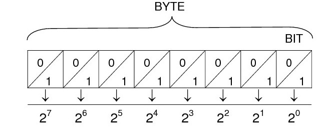

En el diagrama de la derecha, vemos que cada cifra (bit) puede tomar únicamente dos valores, los ya citados 0 y 1. Pero, dependiendo de la posición del bit, la importancia o peso que tiene cada uno no es la misma. Así, por ejemplo, mientras que un uno en la primera casilla tendría un peso de "1", en la cuarta casilla desde la derecha tendría un peso de 23 = 8. Unos ejemplos:
102) = 0·20 + 1·21 = 210) 1012) = 1·20 + 0·21 + 1·22 = 510)